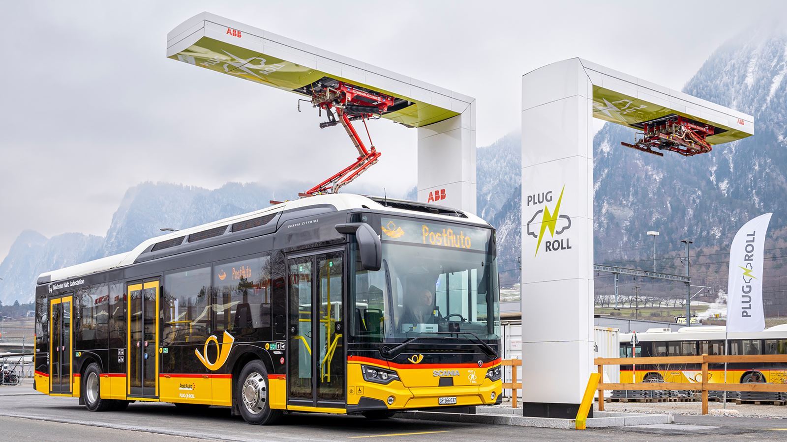
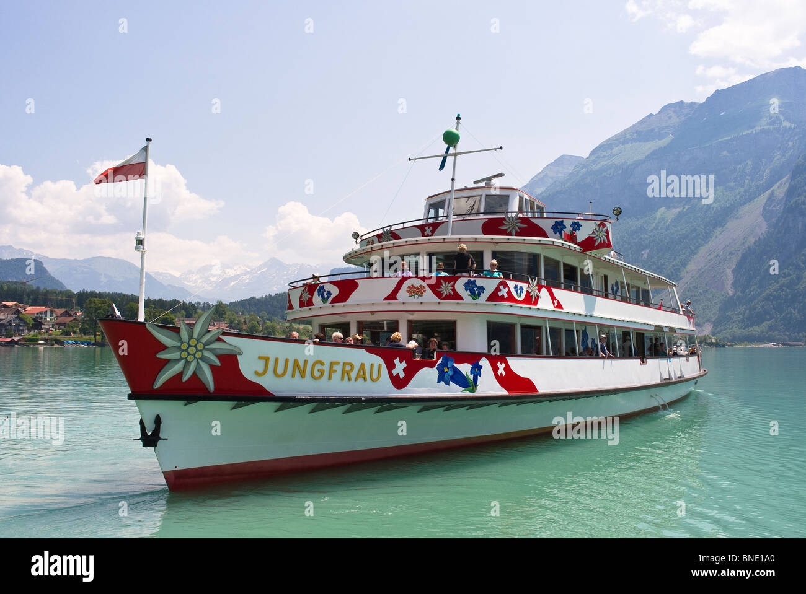
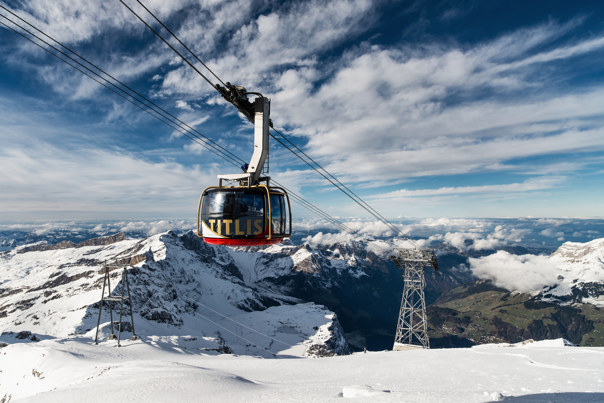
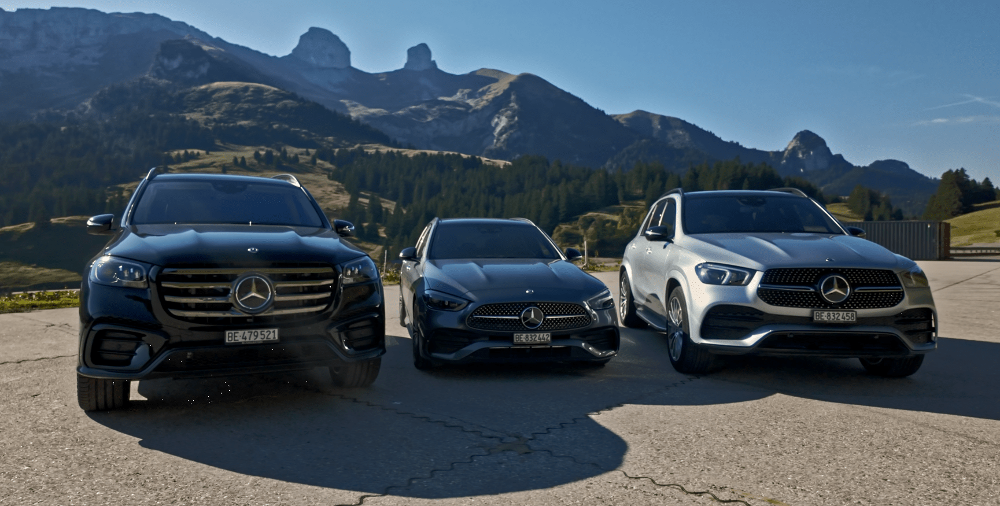

Switzerland has one of the world's most integrated and punctual public transport systems. Trains, buses, boats, and mountain railways work together seamlessly, reaching even the most remote Alpine villages. For tourists, the Swiss Travel Pass is the single most convenient and cost-effective way to explore the country.
Swiss Travel Pass
🎫 The Ultimate Tourist Ticket
The Swiss Travel Pass gives unlimited travel on the national rail, bus, and boat network, plus free entry to 500+ museums and discounts on many mountain railways. Available for 3, 4, 6, 8, or 15 consecutive days (or a Flex version for non-consecutive days). Buy before arriving in Switzerland for best prices.
Train Travel
Swiss Federal Railways (SBB/CFF/FFS) operates an extraordinarily punctual and comprehensive network. Intercity trains connect major cities every 30 minutes, and regional trains reach towns and villages across the country. Trains run on time to the minute — if your train is 3 minutes late, that counts as delayed!
Scenic Train Journeys
| Route | Distance | Journey Time | Highlights |
|---|---|---|---|
| Glacier Express | 290 km | 8 hours | Zermatt to St. Moritz, 291 bridges, 91 tunnels |
| Bernina Express | 144 km | 4 hours | Chur to Tirano (Italy), UNESCO Heritage |
| GoldenPass | 200 km | 5 hours | Lucerne to Montreux via Interlaken |
| Gotthard Panorama Express | — | 4 hours | Lugano to Lucerne (boat + train) |
| Jungfrau Railway | — | 2 hours | Interlaken to Jungfraujoch (3,454m) |
| Rigi Railways | — | 30 min | Vitznau to Rigi Kulm summit |
Other Transport Options

PostBus
Yellow PostBuses reach villages not served by rail. Their famous triple horn signals at mountain passes. Covered by Swiss Travel Pass.

Lake Ferries
Regular ferry and paddle steamer services on all major lakes. A scenic and relaxing alternative to trains. Covered by Swiss Travel Pass.

Cable Cars & Gondolas
Switzerland has hundreds of aerial cable cars reaching mountain tops. Many offer 50% discount with Swiss Travel Pass.

Car Rental
A car is useful for exploring remote valleys. All major rental companies operate in Switzerland. A motorway vignette (CHF 40/year) is required on highways.
Getting to Switzerland
- Zurich Airport (ZRH) – Main international hub, direct trains to the city every 10 minutes
- Geneva Airport (GVA) – Major hub serving western Switzerland and France
- Basel Airport (BSL/MLH/EAP) – Serves Basel, Alsace (France), and Freiburg (Germany)
- By train from Europe – TGV from Paris to Geneva (3 hrs), ICE from Frankfurt to Zurich (3.5 hrs)
- By car – Well-connected motorway network; remember to buy the motorway vignette at the border